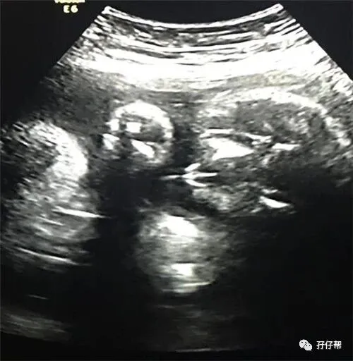
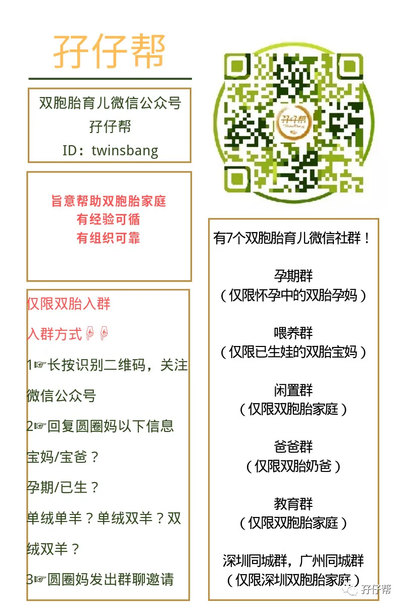

文|圆圈妈，一个文思如尿崩的双胎妈妈
图|来自网络，如有侵权，请联系删除
· 正 · 文 · 来 · 啦 ·
【01】两胎儿的发育情况
孕31周的胎宝宝有葱苗那么长了，从头部到臀部长约42.2CM，约1614G:
孕31周的双胞胎胎儿发育图：
B超孕31周的双胞胎胎儿影像图：
【02】圆圈妈的孕期回忆录
Ⅰ 双胎妊娠的第八次产检
孕28周，医生就叮嘱必须两周一次B超，可是我依然为了省那点钱，怀着侥幸心理，忽略了本应在30周要安排的B超。
可能是心理暗示，也可能是“做贼心虚”，我对30周没有做B超一直耿耿于怀。
而我自觉情况不妙，下腹部发紧发硬的情况比之前频繁了，我不得不再次预约产科医生，开单做B超。
这是双胎孕期的第五次B超。
天公不作美，这次B超不是很顺利，去的时候是下午，没有当天的号源了。
分诊台护士麻利地给我约了隔天10点钟的号。
因为上次尴尬狼狈的经历，圆圈爸特意委派了小姑子全程护送，可能是怕我和婆婆两个弱不禁风的女人纷纷“阵亡”在去医院的路上。
不得不说，人多力量大。
我瞬间感觉底气很足，被两个女人左右搀扶着走去医院的路上，壮观极了！
而最主要的是，我的心态发生了变化。
似乎越到孕后期，我就越觉得无所谓了，那些什么并发症，高危等字眼，我已经看开了。
两胎儿快八个月了，要真发现啥大问题，那就剖出来吧。
反正救命钱已经准备好了！
Ⅱ 我双胎，我骄傲
我雄赳赳地挺着巨肚进入B超室的。
B超医生看到我的巨肚，连忙说：“你慢着点躺上去，不用急！我不催你！”
呵呵o(*￣)￣*)o这态度，我喜欢！
医生很NICE，看着屏幕，给我直播：“右边那宝宝好像被欺负了，头被左边的宝宝挤得有点变形了。”
这要是在以前，我一定没心思听医生说话，因为在我的认知里，医生没啥事就不会说话，主动跟你说话意味着肯定有什么不好的问题出现。
不到二十分钟，B超很快就做完了。
医生说两胎儿挤成一团，太大了，啥都看不清了！只能简单测量下头围肱骨等，预估下孕周和宝宝重量！
最重要的是，医生说了一句让我如释重负的话：“你这两宝宝长得挺好的嘛，都差不多大呢。”
听到医生的话，我心里五味杂全。
我想起4个月前做NT 的时候，医生对我说要严格检测两胎儿的孕周大小。
4个月后的今天，医生说两宝宝好着呢！
我好像被授予特殊荣耀一样，激动极了。
天晓得，这一路走来，我承受着多么巨大的心理负担，医生这么一说，让我有种总算熬出头的兴奋感。
若不是肚子大，太重了，我真的好想跳起来，表达下那种激动无比，按耐不住的心情。
我第一次微笑着，骄傲地走出了B超室。
婆婆紧张地看着我，我故意大声地说：“没事，你的两个宝贝孙都挺好的”，
此言一出立马引来一干人等骚动了下，都围过来问，
“哇，是双胞胎啊，好幸福哦。”
婆婆听了笑得合不拢嘴。
我知道她真的很开心地笑了，她做的饭菜被我嫌弃地一塌糊涂，除了怕我吃不好，也担心饿到她的两宝贝孙，尤其是得知我贫血了，她不会比我好过到哪里去，现在听到这好消息，她一定比我还要激动兴奋！
我怀着双胞胎，所有人都备受折磨，不止我一人。
Ⅲ 宫颈管持续短，再次被要求住院
我拿着B超单子找周医生看结果，她再一次建议我入院观察治疗。
理由是宫颈管已经从孕28周的31MM 变成现在的26MM了，才3周就缩短了0.5MM，马虎不得。
我再一次拒绝了！
此刻的我再也不是5个月前那个一身惶恐，满脸懵逼的女人。
经历一层层的升级打怪兽，我自诩自己是个见过大风大浪的人物了。
俩娃啥时候出来？随缘吧！
一切住院保胎最后也终究敌不过大自然的选择。
就酱…我的双胎孕期的第八次产检，顺利过关了！
我拖着68KG重的身子，潇洒地回家去了。
【03】孕31周那些囧人囧事
①尿频愈演愈烈
这周开始，好久不曾光顾的尿频重新找上门来了，我总是感觉尿不完似的。
每次尿也不是很多，但就是想去尿一下，哪怕只是去厕所蹲一下，一滴尿也好。
我觉得我不必额外散步了，每次来回厕所的路上也能消耗很多卡路里。
可见，我的尿尿啊，要是收集起来，应该是一汪淡黄色的湖水，兴许还能媲美华清池。
②尿尿与被窝的“剪不断，理还乱”
晚上的睡眠质量因为尿频的骚扰大打折扣，上半夜稍微好点，下半夜至少得起来两三次，厕所与被窝里徘徊的日子又回来了。
跟早孕期的尿频不一样的是，晚孕期的尿频才叫炉火纯青。
因为我此刻需要抱着个大肚子从床上艰难地爬起来，只为一泡尿。
每次抱着巨肚翻来覆去，好不容易找到一个舒服的姿势了，哎呀，想尿尿..
好吧，挣扎着起来，嘘完之后，卧槽…我的舒服睡姿哪去了？
TM…重新摸索下，枕头要精确到哪个角度摆放，脚要搭在哪个位置，肚子要安放到哪个坡度…还不能大动作，把里面那两只惊醒了。
好啦，差不多了，应该挺舒服的，睡眼惺忪睡了一会儿。
DAMN…特么又想尿了！
好吧，试下忍一忍…
@#￥5…本来很困的，忍一忍居然就彻底醒了…
OK！还是去尿吧！
我尝试着控制饮水量，晚上8点之后少喝水甚至滴水不沾，可是尿意依然源源不断地像我涌来。
我很怀疑这尿到底是从哪里冒出来的！
而且除了会被尿意憋醒，我还随时会口干舌燥，只能不断喝水，不然根本无法入睡，而喝水的结果就是不停地尿…尿….
一整晚被那几泡尿耍来耍去，心里真的恼火极了!
☞☞TIPS☜☜：所谓的“尿频”，是指在日间小便的次数超过 7次，晚上小便的次数超过 2次以上，且小便的间隔在2个小时以内。
要缓解频尿现象，可改变日常生活和饮水量做起。
平时要适量补充水分，但不要过量，若有尿意，一定要上厕所，尽量不要憋尿，以免造成膀胱发炎或细菌感染。
我想说，对于双胎妈妈来说，这些小tips几乎不管用，基本上是宝爸拿来哄宝妈用的心灵鸡汤。
听听就行了，别太当真，想怎么喝水就喝吧，该怎么尿还是尿吧！
因为孕后期的双胎孕妇如厕问题，压根没有逻辑可言。
根本就是随心所欲地耍！流！氓！
③求马桶和风扇喜结连理！
6月，深圳最炎热的时候，每次去趟厕所，我就大汗一身出来。
看着那不足3平米的厕所，还有那密不透风的窗户，
我好DOWN。
我是在那样恶劣的环境下孕育两个小生命的。
我可以忍受多次的尿频次数，唯独不能忍受坐在闷热不透风的厕所上解决“大自然的召唤”。
我那时的感觉就是，没有马桶和风扇，我活不了！
当时，最大的心愿就是，真希望马桶和风扇能够马上喜结连理，趁着夏天好好在一起。
为了马桶和风扇，我还特意找圆圈爸的茬：“要是有幸能在大深圳买房，厕所必须装空调，不然我们娘仨跟你没完！”
☞未完待续☜
上期推文:
连载（一）|圆圈妈双胞胎怀孕过程第4周
连载（二）|圆圈妈双胞胎怀孕过程第5周
连载（三）|圆圈妈双胞胎怀孕过程第6周
连载（四）|圆圈妈双胞胎怀孕过程第7周
连载（五）|圆圈妈双胞胎怀孕过程第8周
连载（六）|圆圈妈双胞胎怀孕过程第9周
连载（七）|圆圈妈双胞胎怀孕过程第10周
连载（八）|圆圈妈双胞胎怀孕过程第11周
连载（九）|圆圈妈双胞胎怀孕过程第12周
连载（十）|圆圈妈双胞胎怀孕过程第13周
连载（十一）|圆圈妈双胞胎怀孕过程第14周
连载（十二）|圆圈妈双胞胎怀孕过程第15周
连载（十三）|圆圈妈双胞胎怀孕过程第16周
连载（十四）|圆圈妈双胞胎怀孕过程第17周
连载（十五）|圆圈妈双胞胎怀孕过程第18周
连载（十六）|圆圈妈双胞胎怀孕过程第19周
连载（十七）|圆圈妈双胞胎怀孕过程第20周
连载（十八）|圆圈妈双胞胎怀孕过程第21周
连载（十九）|圆圈妈双胞胎怀孕过程第22周
连载（二十）|圆圈妈双胞胎怀孕过程第23周
连载（二十一）|圆圈妈双胞胎怀孕过程第24周
连载（二十二）|圆圈妈双胞胎怀孕过程第25周
连载（二十三）|圆圈妈双胞胎怀孕过程第26周
连载（二十四）|圆圈妈双胞胎怀孕过程第27周
连载（二十五）|圆圈妈双胞胎怀孕过程第28周
连载（二十六）|圆圈妈双胞胎怀孕过程第29周
连载（二十七）|圆圈妈双胞胎怀孕过程第30周
下期预告：
连载（二十九）|圆圈妈双胞胎怀孕过程第32周
-END-
重磅互动
#你希望写什么育儿经验干货？#
评论区聊一聊
随便提，万一下篇就写了呢？
关于这个号
谢谢关注！
我是圆圈妈
85后，全职妈妈
家有孖仔两枚，圆圈&圈圈
双胞胎育儿公众号：孖仔帮
ID:twinsbang
旨意分享双胞胎育儿经验帮助双胞胎家庭
有经验可循
有组织可靠
希望我的经验对您有所启发
期待与您一起共享双胞胎育儿经

